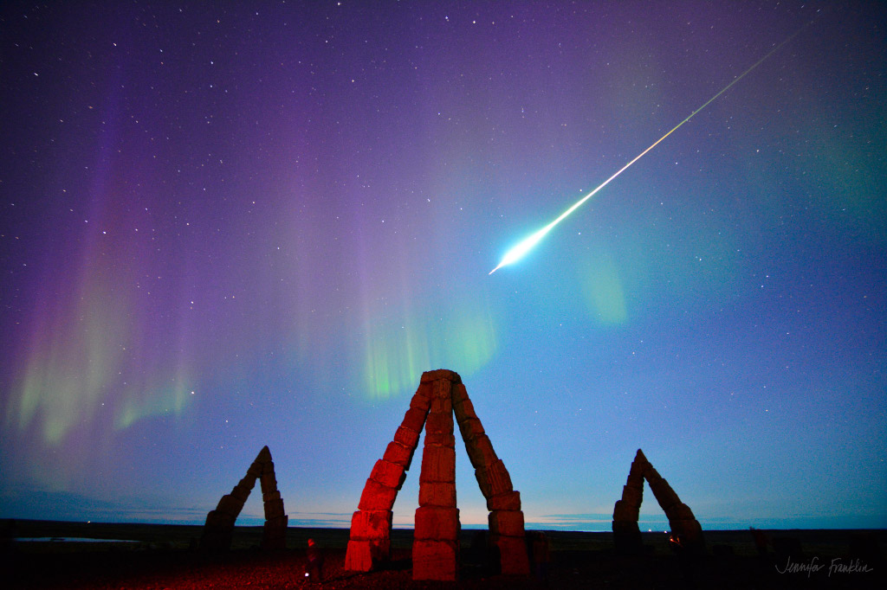

Discover the cosmos! Each day a different image or photograph of our fascinating universe is featured, along with a brief explanation written by a professional astronomer.
2023 September 16

Explanation: On September 12, from a location just south of the Arctic Circle, stones of Iceland's modern Arctic Henge point skyward in this startling scene. Entertaining an intrepid group of aurora hunters during a geomagnetic storm, alluring northern lights dance across the darkened sky when a stunning fireball meteor explodes. Awestruck, the camera-equipped skygazers captured video and still images of the boreal bolide, at its peak about as bright as a full moon. Though quickly fading from view, the fireball left a lingering visible trail or persistent train. The wraith-like trail was seen for minutes wafting in the upper atmosphere at altitudes of 60 to 90 kilometers along with the auroral glow.
Authors & editors:
Robert Nemiroff
(MTU) &
Jerry Bonnell (UMCP)
NASA Official: Phillip Newman
Specific rights apply.
NASA Web
Privacy Policy and Important Notices
A service of:
ASD at
NASA /
GSFC,
NASA Science
Activation
& Michigan Tech. U.
{kind=link}
{kind=link}